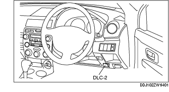

On-board diagnostic system external tester communication function [Electric power steering (EPS)]
Outline
• The external tester communication function enables communication of diagnostic data (DTC read-outs, input/output signal read-outs, and operation of input/output parts) between the EPS CM and an external tester.
Connections/Communication Contents
Serial communication
- • Serial communication (two-way communication) allows for multiple data to be sent and received instantly along the same line.
- • By connecting the WDS or equivalent to the DLC-2, diagnostic data can be sent and received between the WDS or equivalent and the EPS CM via CAN communication lines.
- • The EPS CM receives the command signals of the malfunction detection function, PID/data monitor function, and the active command modes function from the WDS or equivalent, and sends DTCs and data regarding the operating condition and status of each input/output part to the WDS or equivalent.
